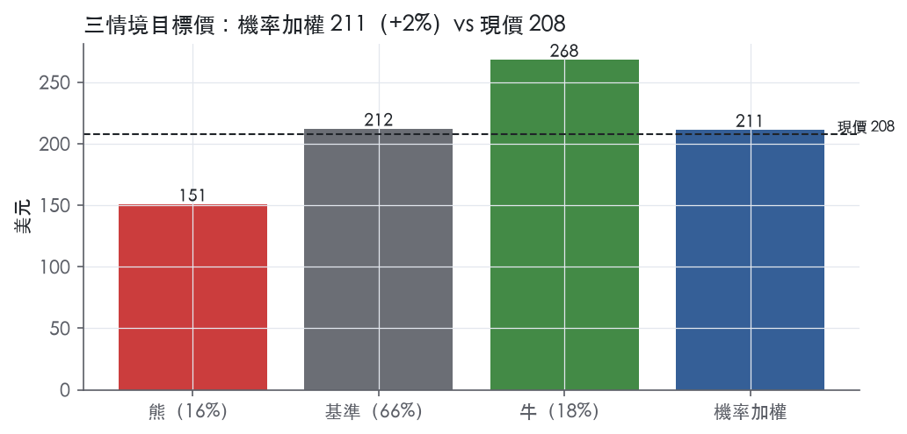
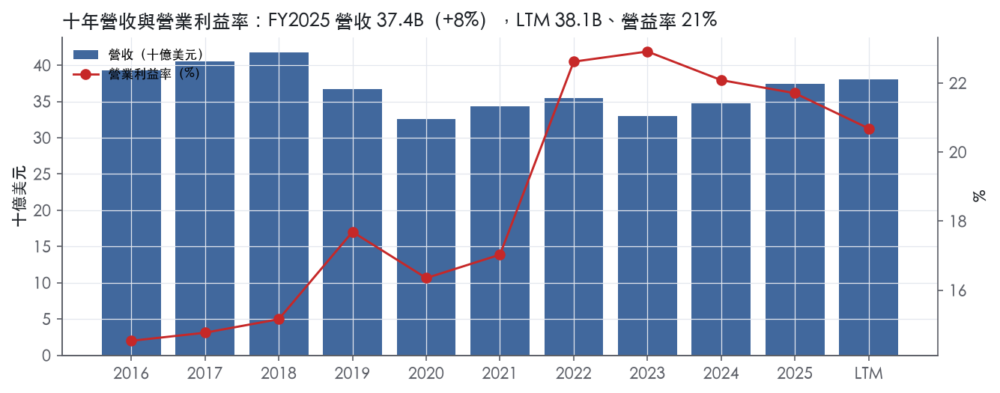
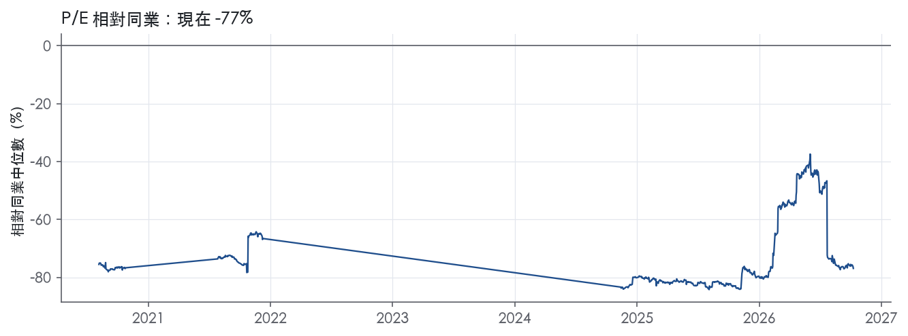
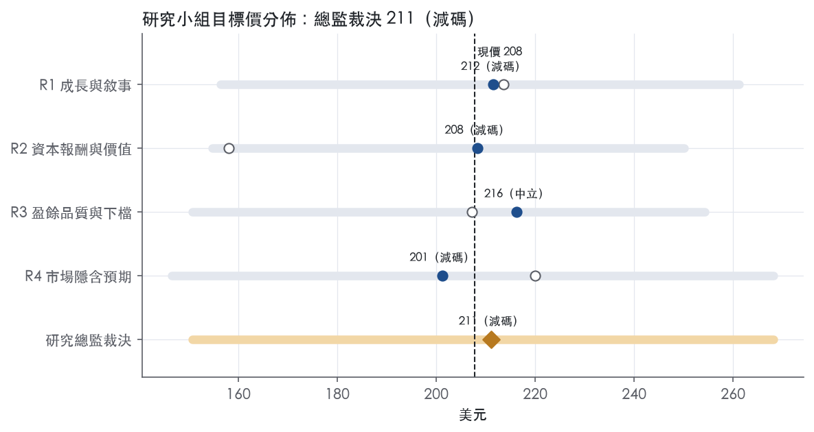

評等總表 › 工業 › HON
合理價無超額報酬，中性、相對門檻減碼｜評等 減碼｜目標價 211
| 評等 | 減碼（邊界，鄰近中立） |
| 12 個月目標價 | 211 美元 |
| 現價 | 207.73 美元（2026-10-09） |
| 預期報酬 | 股價 +1.6%＋股息 2.1%＝總報酬 +3.7%；同業籃門檻 10.2%，超額 -6.5% |
| 估值方法 | P/E 22.0x，套在第 5–8 季的EPS（也就是一年後的未來四季） |
| 三情境 | 熊 151／基準 212／牛 268 |
| 研究流程 | 四位研究員兩輪辯論＋研究總監裁決 |
| 資料來源 | SEC EDGAR XBRL、Tiingo、FRED（全免費） |
合理價無超額報酬，中性、相對門檻減碼（研究總監裁決，四位研究員兩輪辯論後）
評等 減碼（邊界，鄰近中立）｜12 個月目標價 211 美元（總監三情境機率加權 212 與研究員中位數 210 各半）｜現價 207.73（2026-10-09）
預期報酬：股價 +1.6%＋股息 2.1%＝總報酬 +3.7%。同業籃門檻 10.2%，超額 -6.5%，離中立的分界不到三個百分點，屬邊界評等（落在其他級距的機率約四成）。
估值方法：P/E 22.0x，套在第 5–8 季的EPS（也就是一年後的未來四季）。三情境：熊 151（16%）／基準 212（66%）／牛 268（18%）。
立場中性而評等減碼：評等看的是「預期總報酬 3.7% − 同業籃門檻 10.2%」＝超額 -6.5%，不是絕對漲跌；中性但超額偏離門檻，代表情境機率或股利把報酬推離門檻。
什麼會讓研究總監改變看法：FY2027指引同時給有機≥5%、調整後EPS成長>15%且FCF轉換≥1.0x，倍數回到市場現行的24x；Q3 2026 BA或IA分部利潤率因關稅年減、或任一家降評，轉向R3熊情境並把倍數降到19–20x。
| 過去四季（實際，FY2026Q2） | 未來四季 | 第 5–8 季 | 第 9–12 季 | |
|---|---|---|---|---|
| 營收（B） | 38.1B | 20.2B | 21.2B | 22.2B |
| 營收成長 | 5.0% | -47.0% | 5.0% | 5.0% |
| 營業利益率 | 20.7% | 24.0% | 24.5% | 25.0% |
| EPS（美元） | 25.77 | 8.65 | 9.64 | 10.70 |
| EPS 成長 | 46.6% | -66.4% | 11.4% | 11.0% |
| 每股股息（美元） | 9.40 | 9.40 | 9.40 | 9.40 |
| P/E（現價） | 8.1x | 24.0x | 21.6x | 19.4x |
| 股息殖利率（現價） | 2.1% | 4.5% | 4.5% | 4.5% |
過去四季為申報數字；預測為研究總監的假設、程式計算。倍數與殖利率都用現價計算，用來看現價對應各期獲利的高低。
| 情境 | 機率（歷史） | 故事 | 未來四季營收成長 | 第 5–8 季營益率 | 倍數 | 目標價 | 股價漲跌 |
|---|---|---|---|---|---|---|---|
| 熊 | 16%（13%） | PA&T持續負成長、關稅轉嫁失敗壓BA／IA利潤率、S&P或Fitch降評；對應風險表第2、1、5條，觸發點為2026-11上旬Q3財報 | -49.5% | 23.2% | 19.0x | 151 | -27.5% |
| 基準 | 66%（71%） | 有機約5%、分部利潤率每年約+50bps、股數−1%，FY2027指引公布時倍數由24x收斂到22x | -47.0% | 24.5% | 22.0x | 212 | 2.1% |
| 牛 | 18%（16%） | FY2027指引同時給有機≥5%與分部利潤率擴張≥150bps，訂單+16%轉成指引上緣成長，市場維持純自動化溢價 | -47.0% | 25.5% | 26.0x | 268 | 29.1% |
目標價由程式依研究總監的驅動與倍數計算；機率由研究總監給定。括號內是歷史頻率：把這檔股票過去十年 12 個月報酬的波動形狀，置中在基準情境，結果落在各情境附近的比例。

四位研究員用不同方法各自估值，回應研究總監的質疑後交出第二輪，最後由總監逐點裁決。各研究員的主張見第七章，裁決理由見第八章，完整論證見《研究底稿》。
| 立場（一輪→二輪） | 加權目標價（一輪→二輪） | 評等（一輪→二輪） | 第二輪倍數 | 熊～牛目標價 | |
|---|---|---|---|---|---|
| R1 成長與敘事 | 中性→中性 | 214→212 | 減碼→減碼 | 22.0x | 156～261 |
| R2 資本報酬與價值 | 看空→看空 | 158→208 | 賣出→減碼 | 24.0x | 155～250 |
| R3 盈餘品質與下檔 | 中性→中性 | 207→216 | 減碼→中立 | 24.0x | 151～254 |
| R4 市場隱含預期 | 中性→看空 | 220→201 | 中立→減碼 | 21.0x | 147～268 |
| 研究總監裁決 | 中性 | 211 | 減碼 | 22.0x | 151～268 |
目標價由程式依各自的驅動與倍數計算；評等＝機率加權總報酬 − 同業籃門檻。
Honeywell（NASDAQ: HON）是一家以「物理產品＋軟體」混合銷售給全球工業、建築與航太客戶的整合型營運公司，核心由 Honeywell Accelerator 營運系統與 Honeywell Forge 數據平台支撐¹。2025 年 2 月 6 日公司宣布拆分計畫，要把 Honeywell 本體與 Honeywell Aerospace 分為兩家獨立美國上市公司，Honeywell 本體定位為全球純自動化（pure-play automation）公司，Honeywell Aerospace 則定位為一級航太與國防系統供應商¹。這項分割已於 2026 年 6 月 29 日完成，Honeywell Aerospace 以代號 HONA 獨立掛牌交易，同日 Honeywell 本體（仍用代號 HON）完成 1 比 2 反向股票分割²。換算下來，截至 2026 年 10 月 13 日，投資人買到的 HON 已經是拆分完成後的自動化公司，而非 10-K 裡描述的、尚含航太業務的 Honeywell。公司自我定位為「帶領工業部門從自動化走向自主化（autonomy）」的全球自動化龍頭，服務建築、工業、流程三大領域客戶，背後靠超過 50,000 名員工的領域專業知識與龐大裝機基礎數據²。客戶端涵蓋煉油/石化、生命科學、公用事業、倉儲物流、建築業主與營運商等終端市場¹。
10-K 揭露的 2025 年財年結構是四個可報告分部：Aerospace Technologies、Industrial Automation、Building Automation、Energy and Sustainability Solutions（ESS），外加不可報告的 Corporate and All Other¹。2025 全年分部營收分別為：Aerospace Technologies 17,510M 美元（其中商用航空原廠設備 2,513M、商用航空售後市場 7,777M、國防與太空 7,220M）；Industrial Automation 9,401M；Building Automation 7,367M（產品 4,480M、建築解決方案 2,887M）；ESS（即 UOP 業務）3,134M¹。Aerospace Technologies 連續第三年維持兩位數成長，是 2025 年全集團三個分部成長中最快的引擎¹。
但這套四分部架構已經過時：公司在 2025 年 10 月宣布，原 Industrial Automation 與 ESS 下的事業單位將重組為新分部 Process Automation and Technology，連同重新定義後的 Industrial Automation，自 2026 年第一季起生效¹。接著 2026 年 6 月 29 日 Aerospace Technologies 正式分割為獨立公司 Honeywell Aerospace（HONA）²。因此現在的 HON（Honeywell Technologies）只剩三個分部：Building Automation、Process Automation and Technology、Industrial Automation³。2026 年第二季（續業務口徑）三分部營收：Building Automation 2,002M（YoY +10%，有機 +9%，分部利潤率 27.1%）；Process Automation and Technology 1,679M（YoY +4%，有機 -1%，分部利潤率 22.1%）；Industrial Automation 1,501M（YoY -5%，有機 +4%，分部利潤率 17.2%）³。另外 2025 年 10 月 30 日公司已完成 Advanced Materials 業務分拆為獨立上市公司 Solstice Advanced Materials，該業務原屬 ESS 分部，分拆後在財報中列為停業單位¹。公司 2025 年 5 月也出售個人防護裝備（PPE）業務，並評估出售 Productivity Solutions and Services 與 Warehouse and Workflow Solutions 兩個業務單位，截至 2025 年底已列為待出售資產¹；8-K 指出這兩項分割在 2026 年 8 月初前後完成³。簡言之，HON 在過去 12 個月內經歷了三次「瘦身」——AM 分拆、PPE 出售、Aerospace 分拆——最終收斂成一個單純做建築、流程、工業自動化的公司。各業務線在 10-K 揭露的詳細產品組合中，Building Automation 包含建控軟體、感測器、門禁、消防與影像監控產品；Process Automation and Technology 前身的 UOP 提供授權製程技術、設備、催化劑與工程服務；Industrial Automation 涵蓋自動化控制、智慧能源、氣體偵測與倉儲自動化系統¹。
美國政府是重要單一客戶群，2025 年對美國政府（含國防部與其他機構）總銷售額為 4,752M 美元，高於 2024 年的 4,266M 與 2023 年的 3,358M¹，但這主要掛在原 Aerospace Technologies 分部，已隨分拆移出目前的 HON 續業務範圍。就地理與製造布局而言，2025 年美國出口占總銷售 21%（2024 年 14%、2023 年 13%），非美製造產品與服務（主要在歐洲與亞洲）占總銷售 42%（2024 年 44%、2023 年 42%）¹。按分部拆解，ESS 的美國出口比重最高（50%），Aerospace Technologies 次之（33%），Industrial Automation 與 Building Automation 則以非美製造比重較高（均為 56%）¹。10-K 未揭露各分部按國家/地區的詳細營收占比。通路上，公司以直銷結合 OEM 夥伴、系統整合商與售後市場服務網絡銷售，Aerospace Technologies 並出售授權或智慧財產權給其他方¹。
FY2025Q3（截至 2025-09-30）營收 9.44B 美元，年增 7.0%，EBITDA 2.80B（is/cf/bs 資料包，fact id： 等同期數字）。FY2025Q4（截至 2025-12-31）營收 9.76B，年增 6.4%，但營益率驟降至 11.2%、淨利轉為虧損 -0.12B，反映分拆與重組相關一次性費用對當季損益的侵蝕。FY2026Q1（截至 2026-03-31）營收 9.14B，年增 2.4%，營益率回升到 23.3%，EPS 2.58 美元（ltm 系列同期資料）。FY2026Q2（截至 2026-06-30，此口徑仍涵蓋分拆前大部分期間的 Aerospace 業務）營收 9.72B，年增 4.3%，淨利 5.68B、EPS 17.83 美元（附近期數），8-K 說明這一數字「反映 Quantinuum 解除合併的一次性收益」，調整後 EPS 為 4.52 美元³。同一份 8-K 揭露，若只看續業務 Honeywell Technologies（不含 Aerospace）口徑，2Q26 營收 5.187B 美元，年增 3%（有機 +4%），分部利潤率 19.0%（年增 100 bps），調整後 EPS 1.95 美元（年增 10%）³；訂單年增 16%，待執行訂單達約 20B 美元³。公司同步上調續業務全年指引：營收由 19.9–20.2B 美元調整為 19.8–20.0B 美元，有機成長由 2–3% 上修至 3–4%，分部利潤率由 19.8–20.3% 上修至 20.1–20.5%（擴張 250–290 bps），調整後 EPS 由 7.90–8.30 美元上修至 8.05–8.35 美元（成長 25–29%），營運現金流約 2.1B 美元、自由現金流約 2.0B 美元維持不變³。管理層表示下半年有機成長預期加速至 4–6%³。原 Aerospace Technologies 分部（即將完全獨立的 HONA）2Q26 銷售 4.5B 美元，有機成長 5%，商用航空原廠設備年增 17%，售後市場年增 7%，國防與太空持平，分部利潤成長 2% 至 1.1B 美元，含約 40M 美元存貨報廢費用³。
公司在 10-K 中稱其成長策略是「透過監測龐大裝機基礎實現差異化客戶成果與經常性收入成長」，並以 Honeywell Accelerator 營運系統驅動轉型¹。公司強調資本配置是核心：2025 年部署 10.0B 美元於資本支出、股利、庫藏股與併購，包含以 2.2B 美元收購 Sundyne，並宣布以 £1.8B 英鎊收購莊信萬豐（Johnson Matthey）催化劑技術業務（已於 2026 年 7 月 17 日完成交割）¹³。公司承諾每年至少減少 1% 流通股數，並連續第十六次提升股利¹。截至 2025 年底待執行訂單達 37.5B 美元，公司稱這是「未來成長與持續資本配置的堅實基礎」¹；到 2Q26 待執行訂單已增至約 38B 美元（含 Aerospace）、續業務部分約 20B 美元³。CEO Vimal Kapur 在分拆完成後表示，公司「已獨特地站上帶領工業部門從自動化走向自主化的位置」，並稱 2026 年投資人日設定的長期目標因本季表現而更具信心³。
HON 的故事在過去一年半已經從「複雜集團打折」轉為「純自動化公司溢價」的敘事：拆掉 Aerospace、AM 與非核心單位後，留下的三分部都是高利潤率、高經常性收入的自動化資產，2Q26 續業務分部利潤率已達 19–27% 區間，優於拆分前混合體。風險在於拆分後的公司規模明顯縮小（全年營收指引僅 19.8–20.0B 美元，遠低於拆分前整合口徑的 37B+ 美元），估值錨點需要重新建立，不能直接套用 10-K 裡的集團級數字做同比。短期應關注 Process Automation and Technology 有機成長轉負（2Q26 -1%）是否只是催化劑出貨基期問題，還是流程類資本支出週期轉弱的訊號。

HON 的護城河評為窄，趨勢穩定：自動化業務的裝機基礎轉換成本與 UOP 製程授權有足夠證據支撐 5 年以上的超額報酬，但不足以支撐「寬」的 10 年把握。最大的問題在證據本身：十年量化底稿是含航太的集團口徑，而現在掛牌的 HON 已經是拆分後的純自動化公司，最好的那一塊數字已經不在這家公司裡。
轉換成本是主要來源，證據集中在裝機基礎與後續服務。Industrial Automation 擁有「millions of installed assets」，並提供自動化控制、儀表及相關服務¹。Building Automation 的業務涵蓋系統的「installation, maintenance, and upgrades」¹。公司明說要靠「the monetization of our vast installed base」創造經常性收入¹。流程與建築控制系統嵌在客戶的營運核心，汰換牽涉停機、重新驗證與人員訓練，這是轉換成本成立的機制。
無形資產的證據集中在 UOP 的製程授權。UOP 提供「licensed process technology, equipment, engineering, catalysts, adsorbents, and services」¹。授權製程綁定後續的觸媒與吸附劑消耗，形成可重複的收入流。品牌與專利不列為獨立來源：公司自承不依賴任何單一專利、商標或授權¹，而且「Our products face considerable price competition」¹。品牌可以撐住議價能力，但撐不住價格競爭。
網路效應、成本優勢、效率規模都沒有原文證據，不列入。Honeywell Accelerator 是營運紀律，不是結構性成本優勢。
集團口徑的數字支持「有護城河」，但無法直接驗證拆分後的 HON。
支持的部分：ROIC 十年平均 20.0%，扣除資本成本代理值 10.2% 後的利差為 9.8%。有資料的 9 年中，9 年都高於資本成本，最低一年也有 15.8%，標準差 3.0%。營業利益率從 14.5%一路走到 21.7%，毛利率十年標準差只有 3.0%。利潤率在 FY2020 營收衰退 11.1%那年仍維持 16.4%，這是定價能力的證據。
衝突一：ROIC 正在下滑。FY2022 為 23.7%，FY2025 降到 17.7%。同期淨負債從 9.46B 升到 21.65B 美元。公司以 2.2B 美元收購 Sundyne¹，又宣布以 £1.8B 收購 Johnson Matthey 的觸媒技術業務¹。這比較像併購資本稀釋報酬，而不是核心業務的利潤率被侵蝕，因為同期營益率沒有跌。因此趨勢維持「穩定」，不給「變窄」。
衝突二：成長缺席。營收十年平均成長 -0.3%，FY2016 營收 39.30B，FY2025 為 37.44B。剝離與分拆扭曲了這組數字，但護城河很寬的公司通常不會十年零成長。
衝突三：口徑不符，這是決定性的一點。2025 年 Aerospace Technologies 營收 17,510M 美元，其中售後市場 7,777M¹。這塊高黏著度的售後業務已經隨分拆移出 HON。十年 ROIC 的穩定有多少來自航太，底稿無法拆分，這是不給「寬」的主因。
最直接的威脅是同業正面競爭，加上公司自己承認的價格競爭。Building Automation 的對手包括 Johnson Controls、Schneider Electric、Siemens；Industrial Automation 的對手包括 Emerson Electric、Rockwell Automation¹。這些對手同樣擁有大型裝機基礎，轉換成本保護的是存量，搶不到增量。
UOP 的觸媒與製程授權面對 Clariant、Topsoe 的競爭¹，而它的需求綁在煉油與石化的資本支出週期上。
第三個風險是併購稀釋：如果繼續用舉債收購追求成長，ROIC 可能從 17.7%繼續往資本成本靠攏。
第四個風險在軟體層：如果 Forge 在數據與軟體這一層輸給第三方平台，「monetization of installed base」的經常性收入論點就不成立。
目標倍數相對自動化同業（Emerson、Rockwell、Siemens、Schneider）建議持平、不給溢價：窄護城河支撐 5 年以上的超額報酬，但拆分後的業務缺乏獨立的長期 ROIC 紀錄，不足以證明它優於同業。
現有的歷史倍數帶反映的是集團體（含航太），不能直接當作錨點。trailing P/E 8.1x 被 FY2026Q2 單季 EPS 17.83大幅拉高，應改用續業務調整後盈餘重建倍數。
| 指標 | 最新 | 十年平均 | 標準差 | 最低 | 最高 |
|---|---|---|---|---|---|
| ROIC | 17.7% | 20.0% | 3.0% | 15.8% | 24.6% |
| 毛利率 | 36.9% | 34.4% | 3.0% | 30.5% | 38.5% |
| 營業利益率 | 21.7% | 18.5% | 3.3% | 14.5% | 22.9% |
| FCF 利潤率 | 14.5% | 14.1% | 1.6% | 11.2% | 16.5% |
| ROE | 29.1% | 29.3% | 8.1% | 8.6% | 39.0% |
程式計算。資本成本代理值（10 年債＋5%）：10.2%；ROIC 平均減資本成本：9.8%；ROIC 有資料的 9 年中，高於資本成本 9 年。
LTM 營業現金流／淨利僅 0.62x、自由現金流／淨利僅 0.49x，明顯低於近三年均值（1.12x／0.96x）與十年均值（1.39x／1.17x）。但這不是現金轉換能力惡化：FY2026Q2 淨利跳升到 5.68B、EPS 17.83，新聞稿明言「一次性 Quantinuum 分拆利得」是造成該季 EPS 較調整後數字（4.52）高出數倍的主因³，LTM 淨利分母因此被墊高，而 LTM 自由現金流仍為正 4.01B（資料包），並未同步跳升，比率自然被拉低。應計比率 LTM 4.1%、近三年 -0.8%、十年 -1.6%，方向轉正但仍未超過 5% 紅線，屬黃燈觀察，應收帳款與存貨成長都低於營收成長（-2.7pp、-3.1pp），顯示營運資金沒有在吃盈餘，現金品質的核心問題只在那一次性利得，不在應收存貨或遞延認列。
FY2026Q2 合併 GAAP EPS 17.83 對比調整後 EPS 4.52，差距主要來自 Quantinuum 分拆的一次性利得；單看 Honeywell Technologies 本體，GAAP EPS 16.65 對比調整後 1.95，差距同樣巨大³。這一項是真實的會計利得但非經常性現金來源，估值不該用它外推未來盈餘能力。FY2025 全年 EPS 持平的拆解中，商譽減損拖累 1.10 美元／股、處分相關費用拖累 0.54、利息費用增加拖累 0.36、環境負債提列增加拖累 0.25，部分被 Resideo 終止協議利得 1.22 與本業利潤成長 0.56 抵銷⁴。商譽減損 724M（FY2025）與待售資產減損 270M（FY2025）都是非現金項目，但背後反映的是 Productivity Solutions and Services 與 Warehouse and Workflow Solutions 業務被列為待售後的資產重估，屬於真實的策略決策成本，不是純粹口徑遊戲⁴。公司定義的自由現金流也排除資本支出之外的分拆費用、Resideo 收款、石綿負債清償付款與 Quantinuum 現金流³，這些排除項對 2026 年而言大多是真實的一次性現金事件，估值可以接受調整後 FCF，但要記住這些調整本身就是「公司正在大重組」的訊號，不是穩態。
淨負債／EBITDA LTM 2.71x，高於近三年 2.02x 與十年均值 1.28x，近八季總債務從 30.83B（FY2024Q3）一路上升到 33.99B（FY2026Q2）（資料包），利息費用從 749M（FY2023）增加到 1,048M（FY2024）再到 1,344M（FY2025），MD&A 明確指出是「2024 年 8 月發行長期債券」所致⁴。利息保障倍數同步從十年均值 14.6x 掉到近三年 7.82x、LTM 5.44x，槓桿上升是真實趨勢，不是口徑問題。股東回饋端，（股利＋回購）／淨利 LTM 52.0%，低於近三年 113.1% 與十年均值 133.0%，顯示公司在大規模分拆（Solstice 分拆、Aerospace 分拆）與收購（Sundyne、CAES、Johnson Matthey 催化劑業務）期間，把現金留用在交易上而非回饋股東，稀釋股數仍維持負成長（LTM -0.2%、近三年 -2.0%），回購紀律沒有中斷。
紅旗一：營業現金流／淨利紅燈。 根本原因是 LTM 淨利因 Quantinuum 分拆一次性利得而膨脹，新聞稿已明確點名此項為 GAAP 與調整後 EPS 落差的主因³，現金流本身沒有惡化，判定為假警報，應以調整後盈餘重新檢視比率。
紅旗二：自由現金流／淨利紅燈。 同一根因——分母被一次性利得撐高，FCF 絕對金額（LTM 4.01B，資料包）仍健康，判定為會計口徑造成的假警報。
紅旗三：FY2017→FY2018 淨利率跳動 +12pp。 FY2017 淨利 1.54B、EPS 4.00，FY2018 淨利 6.76B、EPS 17.96（資料包年度表），落差極大。但本次拿到的 10-K MD&A 只涵蓋 2023–2025 三年，沒有 2017–2018 年的原文可查證，無法用本章規則要求的原文證據解釋此跳動的具體原因。由於距今已超過十年、且不影響 LTM 與近三年的品質判斷，列為未解釋但不影響當前結論的歷史紅旗，建議估值模型不要用那兩年的淨利率做任何外推。
黃燈：應計比率、淨負債／EBITDA、利息保障倍數。 應計比率 4.1% 尚未過紅線，且與現金流紅旗同源（分母效應），非新增的應計堆積問題；淨負債／EBITDA 與利息保障倍數的惡化則是真實槓桿上升，由 2024 年 8 月發債所致⁴，不是假警報，須持續追蹤分拆後資產負債表瘦身速度。
估值應以調整後 EPS／segment profit 為基礎而非 LTM GAAP 數字，因為最近一期 GAAP 盈餘被 Quantinuum 分拆一次性利得嚴重扭曲，用 GAAP trailing P/E 8.1x 會低估真實倍數基礎。現金流與應計面的紅燈多為口徑性假警報，不需要對核心盈餘品質打額外折扣，但槓桿上升（淨負債／EBITDA 2.71x、利息保障降至 5.44x）是真實趨勢，分拆後資本結構尚未穩定，應對估值倍數保留一定保守空間，直到 Aerospace 分拆後的資產負債表與利息負擔明朗為止。
| 項目 | LTM | 近三年 | 十年 | 燈號 | 規則 |
|---|---|---|---|---|---|
| 營業現金流／淨利 | 0.62x | 1.12x | 1.39x | 紅 | ≥1.00x 綠、<0.80x 紅 |
| 自由現金流／淨利 | 0.49x | 0.96x | 1.17x | 紅 | ≥0.90x 綠、<0.60x 紅 |
| 應計比率（(淨利−CFO)／平均總資產） | 4.1% | -0.8% | -1.6% | 黃 | ≤0.0% 綠、>5.0% 紅 |
| SBC／營收 | 0.0% | 0.6% | 0.5% | 綠 | ≤3.0% 綠、>8.0% 紅 |
| 淨負債／EBITDA | 2.71x | 2.02x | 1.28x | 黃 | ≤1.50x 綠、>3.00x 紅 |
| 利息保障倍數（營業利益／利息） | 5.44x | 7.82x | 14.6x | 黃 | ≥8.00x 綠、<3.00x 紅 |
| 稀釋股數年變動 | -0.2% | -2.0% | -2.1% | 綠 | ≤0.0% 綠、>3.0% 紅 |
| （股利＋回購）／淨利 | 52.0% | 113.1% | 133.0% | 綠 | ≥50.0% 綠、<0.0% 紅 |
| 應收帳款成長 − 營收成長（FY2025） | -2.7pp | — | — | 綠 | ≤5pp 綠、>15pp 紅 |
| 存貨成長 − 營收成長（FY2025） | -3.1pp | — | — | 綠 | ≤5pp 綠、>15pp 紅 |
程式計算；燈號以 LTM（無則近三年平均）判定。
拆分後的 Honeywell Technologies 是一家規模縮小到全年營收 19.8–20.0B 美元的純自動化公司³，最大的風險不是 10-K 裡列的航太/國防類項目（已隨 Aerospace 分割移出），而是關稅成本轉嫁能力與 Process Automation and Technology 分部有機成長轉負（2Q26 -1%）能否如公司宣稱在下半年反彈到 4–6%³；若無法達成，8.05–8.35 美元的調整後 EPS 指引將首先被下修。
| 風險 | 觸發指標（看什麼數字、在哪裡看） | 對 EPS 的影響方向與粗略幅度 | 未來 12 個月發生機率 | 出處 |
|---|---|---|---|---|
| 關稅與貿易政策成本轉嫁失敗 | 季報毛利率變化、USTR/中國對等關稅公告日期、10-Q「tariff」相關揭露段落 | 負向，中～大（毛利率已從 2Q25 的高點承受壓力，10-K 未量化） | 高 | 10-K 年報 FY2025 Item 1A（風險因素） |
| Process Automation and Technology 有機成長持續疲弱 | 每季 8-K 分部表 PA&T 有機成長率、訂單年增率、分部利潤率（2Q26 已降至 22.1%，-180bps） | 負向，中（PA&T 占續業務營收約三分之一） | 中 | 8-K 財報新聞稿（2026-07-23） |
| 分拆過渡期一次性費用與 IT 基礎設施轉換風險 | 10-Q「separation and spin-off related costs」金額、自由現金流指引是否偏離約 2.0B 美元 | 負向，中（已反映在 FY2025Q4 淨利轉虧 -0.12B） | 中 | ⁵ |
| Johnson Matthey Catalyst Technologies 併購整合不如預期 | 合併後 PA&T 分部利潤率走勢、是否出現商譽減值揭露 | 負向，中（交易於 2026-07-17 完成，尚未有完整季度驗證） | 中 | 8-K 財報新聞稿（2026-07-23） |
| 信評展望負向推升融資成本 | S&P／Fitch Watch Negative 後續評級動作公告日期、新發債券票面利率 | 負向，小～中（總借款 34.6B 美元，1 個百分點升息情境下長期債公允價值減少 1,341M 美元） | 低～中 | 10-K 年報 FY2025 Item 1A（風險因素） |
關稅與貿易政策成本轉嫁失敗。 10-K 明確承認「美國持續對中國及其他國家進口商品課徵關稅，並引發報復性關稅」，公司雖部署緩解策略，但「無法保證能完全緩解所有關稅及貿易政策的全部衝擊」⁵。Industrial Automation 與 Building Automation 的非美製造比重各達 56%¹，一旦關稅或報復性關稅擴大，原材料與零組件成本將直接侵蝕這兩個分部的毛利率。這條風險之所以排第一，是因為它是正在發生、且可每季追蹤的事，不是假設情境。
Process Automation and Technology 有機成長轉負。 2Q26 該分部有機成長 -1%，主因催化劑出貨基期較高、售後市場下滑 6%，分部利潤率因此收縮 180bps 至 22.1%³。公司guidance 把下半年有機成長預期上調到 4–6%，但這個數字能否兌現取決於 LNG 專案出貨節奏與催化劑需求回溫，兩者都屬於客戶資本支出週期，一旦工業資本支出轉弱，這個分部會最先反映在財報上。
分拆過渡期一次性費用與 IT 轉型風險。 10-K 自己承認「在進行 Solstice 分拆及 Aerospace 分割等重大 IT 基礎設施轉換期間，面臨的風險層級增加」⁵。FY2025Q4 淨利由盈轉虧（-0.12B 美元），FY2026Q1 營益率也明顯低於其他三季，顯示分拆相關一次性費用對當季損益有實質衝擊。公司全年自由現金流指引維持約 2.0B 美元不變³，若分拆尾款或重組費用超出預期，這個數字會是第一個被下修的指引項目。
Johnson Matthey Catalyst Technologies 併購整合風險。 公司以 £1.8B 收購該業務，已於 2026 年 7 月 17 日完成交割，guidance 已將其納入全年數字³。10-K 一般性地指出「可能無法成功執行或有效整合收購案」，包括未達預期回報與商譽減值風險⁵。因為這筆交易剛完成，尚無完整季度數據驗證整合成效，是一個需要持續觀察下一季財報的新變數。
信評展望負向推升融資成本。 截至 2025 年底，S&P 與 Fitch 均給予 Watch Negative 展望，僅 Moody's 維持 Stable⁵。總借款達 34.6B 美元（2025 年底）⁵，一旦評級被下調，再融資成本將上升，侵蝕淨利息支出。這條機率較低，因為公司現金部位充裕（12.9B 美元現金及約當現金）⁵，短期流動性壓力不大，但仍值得放進監測清單。
現價 207.73 對應 trailing（過去四季）P/E 8.1x、EV/EBITDA 9.9x、EV/EBITA 10.7x、EV/Sales 2.4x、FCF 殖利率 6.1%。主要估值倍數 P/E 現在 8.1x，落在5 年區間第 1 百分位（P10／P50／P90 = 11.1x／12.3x／14.1x）。
把程式的機械基準預測放到現價下，市場付的前瞻倍數是：P/E（未來四季） 12.0x、P/E（第 5–8 季） 11.1x。反推 DCF 顯示市價隱含未來五年營收年成長 -0.5%（WACC 9.0%、終值成長 3.0%、FCF 利潤率 17.0%，SBC 不加回）。
| 倍數 | 現在 | 5 年 P10 | 5 年 P50 | 5 年 P90 | 現在分位 | 全期 P50 |
|---|---|---|---|---|---|---|
| P/E | 8.1x | 11.1x | 12.3x | 14.1x | 1.0% | 12.0x |
| EV/EBITDA | 9.9x | — | — | — | — | 10.3x |
| EV/EBITA | 10.8x | — | — | — | — | 11.2x |
| EV/EBIT | 11.6x | 9.1x | 11.2x | 12.7x | 59.4% | 11.0x |
| EV/Sales | 2.4x | 2.1x | 2.4x | 2.7x | 50.5% | 2.1x |
| P/S | 1.7x | 1.7x | 1.9x | 2.2x | 9.3% | 1.8x |
| P/FCF | 16.5x | 11.4x | 14.3x | 17.6x | 79.0% | 12.9x |
trailing 倍數（股價 ÷ 過去四季）；分位以每個交易日計算。
同業籃：RTX, SARO, HEI, TATT, SIF（SIC 3724 同業 6 家中，CY2025 營收最接近的 5 家）。評等門檻 10.2%：同業「倍數不變下持有一年」的隱含報酬中位數（＝ FCF 殖利率 ×(1＋g)＋g，g 為 5 年營收年複合成長並夾在 −2%～8%），每家夾在 0～15%、P/E 低於 5 倍視為資料可疑而排除，中位數再限制在 10 年債到 10 年債＋5% 之間（同業原始中位數 11.1%）；排除：TATT（隱含報酬算不出來）。
| 代號 | 市值 | 5 年營收 CAGR | 營益率 | ROIC | P/E | 5 年 P/E 中位數 | EV/EBITDA | P/FCF | 隱含報酬 |
|---|---|---|---|---|---|---|---|---|---|
| HON | 65.8B | 2.8% | 20.7% | 17.7% | 8.1x | 12.3x | 9.9x | 16.4x | 9.0% |
| RTX | 250.6B | 9.4% | 11.2% | 7.9% | 32.7x | 36.3x | 18.7x | 22.0x | 12.9% |
| SARO | 6.7B | 13.5% | 9.5% | 8.9% | 20.9x | — | 11.2x | 30.5x | 11.5% |
| HEI | 42.1B | 20.2% | 24.0% | 14.2% | 49.6x | 64.7x | 30.4x | 40.9x | 10.6% |
| TATT | — | 18.8% | — | 13.0% | — | — | — | — | — |
| SIF | 0.1B | -5.7% | 5.2% | 0.3% | 37.2x | — | 17.1x | 43.9x | 0.2% |
| 同業中位數 | 13.5% | 10.3% | 8.9% | 34.9x | 50.5x | 17.9x | 35.7x | 10.2% |
全部 trailing，程式以各公司 SEC XBRL 與 Tiingo 行情計算；第一列為本檔。
P/E 相對同業中位數：現在 -76.9%，過去 1 年平均 -65.9%、3 年 -73.4%、5 年 —；EV/EBITDA 相對同業中位數：現在 -44.4%，過去 1 年平均 -41.8%、3 年 -45.8%、5 年 —。

事後實現前瞻倍數帶（P/E，2018-08-17..2025-08-15）：P10／P50／P90 = 9.0x／11.4x／14.9x。它是每個交易日的股價除以之後四季實際實現的指標；一年後，今天的第 5–8 季正是那時的未來四季，所以這條帶是 12 個月目標價的同口徑倍數。因為用的是事後實際而非當時預期，過去成長超乎預期的公司這條帶會偏低。
程式的機械基準（成長率從過去四季年增率三年收斂到 6%、利潤率持平）用 事後實現前瞻 P/E P50 估值得到 214（2.8%），市場現行前瞻倍數（現價 ÷ 基準 未來四季指標）一年後持平，套在基準 第 5–8 季指標得到 223。這兩個數字只是參考點，不是本報告的目標價；研究員對這個定價的回應在第七章。
下表是每位研究員第一輪（各自獨立）與第二輪（回應研究總監的質疑後）的結果。目標價全由程式依各自的假設計算。
| 立場（一輪→二輪） | 加權目標價（一輪→二輪） | 評等（一輪→二輪） | 第二輪倍數 | 熊～牛目標價 | |
|---|---|---|---|---|---|
| R1 成長與敘事 | 中性→中性 | 214→212 | 減碼→減碼 | 22.0x | 156～261 |
| R2 資本報酬與價值 | 看空→看空 | 158→208 | 賣出→減碼 | 24.0x | 155～250 |
| R3 盈餘品質與下檔 | 中性→中性 | 207→216 | 減碼→中立 | 24.0x | 151～254 |
| R4 市場隱含預期 | 中性→看空 | 220→201 | 中立→減碼 | 21.0x | 147～268 |
| 研究總監裁決 | 中性 | 211 | 減碼 | 22.0x | 151～268 |
目標價由程式依各自的驅動與倍數計算；評等＝機率加權總報酬 − 同業籃門檻。
分歧度：第一輪 加權目標價 158～220（區間＝現價的 30%）· 倍數 22～24x · 立場 中性×3、看空×1；第二輪 加權目標價 201～216（區間＝現價的 7%）· 倍數 21～24x · 立場 中性×2、看空×2。

| 研究員 | 第二輪主張 | 堅持的理由 |
|---|---|---|
| R1 成長與敘事 | 中性，22x；成長溫和、價格合理，相對門檻減碼。 | 訂單年增16%是最強的領先指標，基準成長5.5%不下修。 |
| R2 資本報酬與價值 | 偏空，24x；目標價貼近現價，仍落後同業門檻。 | 護城河窄，ROIC從23.7%降到17.7%，不給純自動化溢價。 |
| R3 盈餘品質與下檔 | 中性，24x；核心盈餘可信，股價合理，相對門檻減碼。 | FCF已加回分拆費用，仍低於調整後淨利，現金轉換折價保留。 |
| R4 市場隱含預期 | 偏空，21x；EPS成長降檔後，市場會壓縮倍數。 | 市場高估倍數的持久性，公司利潤率跳一階後就停住。 |
每位研究員的逐條回應與完整論證見《研究底稿》（HON_研究底稿_2026-10-13.docx）。
| 分歧點 | R1 | R2 | R3 | R4 | 什麼資料會分出勝負 |
|---|---|---|---|---|---|
| 目標倍數與口徑 | 22x@q5_q8，無來源假設 | 24x@ntm，判斷值 | 24x@q5_q8，持平再折價 | 21x@q5_q8，成長降檔重估 | 2027-02 FY2027 指引的 EPS 成長率與 FCF 轉換；Q3 10-Q 的 GAAP／分部利潤率差距 |
| Q5–Q8 營收成長 | 5.5%（訂單 +16%） | 5.0% | 4.5%（PA&T 轉負） | 5.0%（十年只一年 >6.5%） | 2026-11 上旬 Q3 有機成長對 4–6%；FY2027 有機指引中點 |
| 營益率校準與斜率 | 24.0／24.5／25.0 | 23.5／24.0／24.5 | 23.8／24.1／24.4，另設 sbc、capex | 24.0／24.5／25.0 | FY2027 分部利潤率擴張指引；Q3 BA／IA 利潤率年變動 |
| 熊情境幅度與機率 | 20%，19x，23% | 14%，19x，23% | 15%，19x，風險表 2／1／5 | 21%，18x，22.5% | Q3 BA／IA 利潤率是否因關稅年減、PA&T 是否再負；S&P／Fitch 評等結論 |
目標倍數：own，22x eps@q5_q8。 四人都同意自家帶（分母含航太，LTM EPS 25.77 含 Quantinuum 一次性利得）與航太籃（中位數 P/E 34.9x）失效，錨只能從現價反推。R2 第二輪以 24x 套校準後的 NTM EPS 得 206.98，幾乎等於現價 207.73：市場現在對續業務 NTM EPS 付的就是 24x 上下（判斷）。依劇本口徑，套在 Q5–Q8 的倍數等於「一年後市場對那時未來四季付的倍數」，22x 即比現在少兩轉，各有個股理由。第一轉是 R4 的機制：2026 年調整後 EPS 成長 25–29% 建立在 250–290 bps 的分部利潤率擴張上（8-K 2026-07-23 Table 4），含組合重整成分，2027-02 的 FY2027 指引會把成長率重設到「有機約 5%＋利潤率約 50 bps＋股數 −1%」的量級，而這家公司的紀錄是利潤率跳一階就停住（17.0%、FY2022 22.6%、FY2025 21.7%）。第二轉是 R3 的證據：FCF 指引約 2.0B 已加回分拆費用仍低於調整後淨利，轉換低於一（8-K Table 4 註 4、財務體質章），加上護城河章評窄、ROIC 從 23.7% 降到 17.7%（FY2025），不給溢價。不到 R4 的 21x：訂單 +16%、待執行約 20B、PA&T 訂單 +24%（8-K Table 2、3）讓降檔更像部分重估而非失望式重估，且 R4 從 23x 砍到 21x 只是回應我 E5 的一致性修補，沒有量化依據。不到 R3 的 24x：持平等於假設市場在高成長年份之後繼續付高成長倍數，R3 自己把 FCF 轉換列為折價理由卻只折到持平。R2 的 24x@ntm 經程式只得 206.98，低於 R1 的 22x@q5_q8（213.40），實質比我保守，但錨繞路，不採用其口徑。
Q5–Q8 營收成長：expectations，5.0%。 下半年有機指引 4–6%（8-K Table 4）的中點。R1 的 5.5% 靠訂單 +16%，但 PA&T 的 +24% 由 LNG 長週期專案帶動、IA 報告營收 −5%（8-K Table 3），訂單對 2027 下半年到 2028 上半年的轉換速度沒有證據；R3 的 4.5% 把 PA&T 單季有機 −1% 當趨勢，新聞稿寫明主因是前一年催化劑出貨基期（8-K Table 3），他沒看到同業表，也沒有新的下修證據。R4 補的歷史對照（十年只有 FY2025 一年成長超過 6.5%，7.8%）同時擋住 R1 和他自己的第一輪，推理最完整。
營益率校準：growth，24.0／24.5／25.0%。 這是校準參數：模型凍結的是合併口徑利息（FY2025 1,344M，10-K Item 7），要讓 NTM EPS 對齊續業務指引 8.05–8.35，營益率必須高於分部利潤率。NTM 跨到 2027 上半年，EPS 應高於 2026 全年指引中點；R3 以 23.8% 配 −48% 重設，校準出的底偏低——他用 24x 只得 218.61，R1 用 22x 就有 213.40（程式）。+50 bps 的斜率有依據：2Q26 BA、IA 各擴張 90 bps，來源是定價、量能槓桿與生產力（8-K Table 3），PA&T 的 −180 bps 是催化劑量與產品組合，訂單 +24% 顯示會回補；R3 的 +30 bps 等於讓 PA&T 拖累延續到 2028。R4 第二輪經 E2 收斂到同一組數字，R2 斜率相同、起點不同，取 R1 的版本。R3 另設的 capex 2.2%／sbc 0.6% 不採用：續業務資本密集度材料內沒有，且只影響 FCF 交叉驗證。
熊情境：quality，機率向歷史靠。 R3 的熊情境是唯一完整對應風險表（第 2 條 PA&T 持續負成長、第 1 條關稅轉嫁失敗、第 5 條降評）的版本：營收重設到指引下緣之下、利潤率低於基準約 100 bps、19x。R4 的 22.5% 把利潤率打掉 200 bps，而 FY2020 營收 −11.1%那年營益率只從 17.7% 降到 16.4%（FY2020）——R2 已用同一證據撤回自己的 −200 bps，R4 沒有風險表卻比有風險表的人更狠。機率上，R1 把熊拉到 20% 的理由（剛分拆、Watch Negative、Q3 是首個純口徑季度）都是不確定性，不確定性應同時放寬兩尾而不是只加熊；R4 的 21% 對歷史 14% 是同一型偏誤。本研究部 22 份報告熊皆高於牛，這裡不延續。
漂移處理：本輪無退回。 R2 靠攏 90%，但全來自我 V1 指出的口徑錯誤（NTM EPS 低於他採信的指引）與 V2 的 FY2020 證據，五項接受全附證據；R3 的 58% 來自撤回「分拆後槓桿高於 2.71x」的錯誤時點推論；R4 的 52% 是穿過中位數往空方走，不是趨同。R4 多砍的一轉與 R1 的熊機率已在上面處理。另查：第二輪無人用利率壓倍數，R2 已撤回「FCF 殖利率低於公債」。
與機械基準不同的驅動（皆為假設）：
目標倍數 22x，eps，q5_q8。錨：市場現行對續業務 NTM EPS 的倍數約 24x（由 R2 程式結果 206.98≈現價反推，判斷）扣兩轉；口徑是「一年後的倍數 × 一年後的未來四季」，與現在的 NTM 倍數同口徑可比。事後實現前瞻帶 P50 11.4x、自家 5 年 P/E 中位數 12.3x 都是集團口徑，水準與形狀都不用。相對同業：航太籃不可比，材料內沒有自動化同業倍數，依護城河章不給溢價，22x 是「無溢價」的判斷值。
差在倍數，不在盈餘：盈餘路徑與公司指引一致，市場對 NTM EPS 付約 24x，我們認為一年後市場只會對那時的未來四季付 22x，壓縮來自 2026 年 25–29% 的 EPS 成長在 FY2027 指引降檔，以及 FCF 轉換低於一被確認為結構性。立場中性、評等減碼不衝突：門檻 10.2% 來自航太籃且落在 10 年債＋5% 的上限（程式），而同倍數的 R1 含息總報酬只有 +3.9%（程式），任何籃子都給不出加碼；但牛熊距離對稱、牛機率不低於熊、目標價約等於現價，不是高估，所以不看空。
現價 207.73 → 點估目標價 212 → 機率加權目標價 212 → 目標價 211，差距拆成五段：成長順延 +16 美元（市場現行倍數 12.0x 一年後持平、獲利照機械基準）；倍數差 +188 美元（總監倍數 22.0x vs 市場持平倍數 12.0x，同一機械基準預測）；盈餘差 -199 美元（總監預測的第 5–8 季EPS 0.0B vs 機械基準 0.0B，同一倍數）；情境不對稱 +0 美元（機率加權減點估）；研究小組平均 -1 美元（總監機率加權 212 與研究員第二輪中位數 210 各半）。各段相加等於目標價減現價。本階段未接賣方共識，差距以市場隱含預期為對照。
| 驅動 | 機械基準 | 研究總監 | 差異 |
|---|---|---|---|
| 未來四季營收成長 | 5.3% | -47.0% | -52.3 pp |
| 第 5–8 季營收成長 | 5.7% | 5.0% | -0.7 pp |
| 第 9–12 季營收成長 | 6.0% | 5.0% | -1.0 pp |
| 未來四季營益率 | 20.7% | 24.0% | +3.3 pp |
| 第 5–8 季營益率 | 20.7% | 24.5% | +3.8 pp |
| 第 9–12 季營益率 | 20.7% | 25.0% | +4.3 pp |
| D&A／營收 | 3.4% | 3.4% | ＝ |
| 資本支出／營收 | 2.9% | 2.9% | ＝ |
| SBC／營收 | 0.0% | 0.0% | ＝ |
| 稅率 | 20.0% | 20.0% | ＝ |
| 股數年變動 | -0.6% | -1.0% | -0.4 pp |
研究總監只寫偏移，未寫的沿用基準。
| 期 | 營收 | 成長 | 營益率 | 營業利益 | EBITDA | EBITA | 淨利 | EPS | FCF | 期末淨負債 |
|---|---|---|---|---|---|---|---|---|---|---|
| 未來四季 | 20.2B | -47.0% | 24.0% | 4.8B | 5.5B | 5.1B | 2.7B | 8.65 | 2.8B | 26.3B |
| 第 5–8 季 | 21.2B | 5.0% | 24.5% | 5.2B | 5.9B | 5.5B | 3.0B | 9.64 | 3.1B | 27.4B |
| 第 9–12 季 | 22.2B | 5.0% | 25.0% | 5.6B | 6.3B | 5.9B | 3.3B | 10.70 | 3.4B | 28.3B |
程式依上表的驅動計算；季度用最近四季季節性分攤；不含營運資金變動。
估值方法：P/E 22.0x，套在第 5–8 季的EPS（也就是一年後的未來四季）。研究總監目標倍數的錨：市場現行對續業務NTM EPS約24x（由R2程式結果206.98≈現價反推，判斷）扣兩轉：FY2027指引時EPS成長降檔的重估、FCF轉換低於一與窄護城河不給溢價；集團口徑的自家帶與航太籃不用。
計算：EPS（第 5–8 季） 9.64 × 22.0x → 點估目標價 212（2.1%）；隱含 P/E（未來四季）24.5x、P/E（第 5–8 季）22.0x、EV/EBITDA（第 5–8 季）15.6x、FCF 殖利率（第 5–8 季）4.7%。
總監三情境機率加權目標價 212，研究員第二輪中位數 210，兩者各半＝目標價 211；預期報酬 股價 +1.6%＋股息 2.1%＝總報酬 +3.7%；減評等門檻 10.2%（同業籃隱含報酬中位數（RTX, SARO, HEI, TATT, SIF））＝超額報酬 -6.5% → 評等 減碼（超額 >+15% 買進、+5～+15% 加碼、±5% 中立、−5～−15% 減碼、<−15% 賣出）。同一份資料重開研究小組，超額約有正負四個百分點的雜訊（一個標準差，二十檔實測）；以此估計，評等落在其他級距的機率約四成。超額離中立的分界不到三個百分點，應視為邊界評等。
| 情境 | 機率 | 未來四季成長 | 第 5–8 季成長 | 第 5–8 季營益率 | EPS（第 5–8 季） | 倍數 | 目標價 |
|---|---|---|---|---|---|---|---|
| 熊 | 16% | -49.5% | 1.5% | 23.2% | 7.93 | 19.0x | 151 |
| 基準 | 66% | -47.0% | 5.0% | 24.5% | 9.64 | 22.0x | 212 |
| 牛 | 18% | -47.0% | 6.0% | 25.5% | 10.31 | 26.0x | 268 |
| 主張 | 驗證日 | 看哪個數字 | 門檻 |
|---|---|---|---|
| Q3 2026續業務有機成長達下半年指引下緣，且BA、IA分部利潤率未年減 | 2026-11-06 | 8-K分部表：續業務有機成長；BA、IA分部利潤率年變動 | 有機≥4%且BA、IA利潤率年變動≥0bps |
| FY2027調整後EPS成長指引從25–29%降檔 | 2027-02-15 | FY2027調整後EPS成長指引中點 | ≤15% |
| FY2027 FCF指引仍低於調整後淨利，現金轉換低於一屬結構性 | 2027-02-15 | FY2027 FCF指引 ÷（調整後EPS指引中點 × 稀釋股數） | <1.0x |
| S&P與Fitch對分拆後HON皆未下調長期信評 | 2027-03-31 | S&P／Fitch長期發行人評級動作 | 無下調 |
到期由程式結算（第 5 階段帳本）。
內文上標數字對應下列公司申報文件；未標上標的分析與判斷，是研究小組的觀點。報告中的每個數字都經程式逐一核對資料包或原文。
| 期 | 營收 | 成長 | 毛利率 | 營益率 | EBITDA | 淨利 | EPS | CFO | FCF | ROIC | 淨負債 | 稀釋股數 |
|---|---|---|---|---|---|---|---|---|---|---|---|---|
| FY2016 | 39.3B | — | 30.9% | 14.5% | 6.7B | 4.8B | 12.42 | 5.5B | 4.4B | — | 6.4B | 0.4B |
| FY2017 | 40.5B | 3.1% | 30.6% | 14.8% | 7.1B | 1.5B | 4.00 | 6.0B | 4.9B | 15.8% | 7.1B | 0.4B |
| FY2018 | 41.8B | 3.1% | 30.5% | 15.2% | 7.5B | 6.8B | 17.96 | 6.4B | 5.6B | 24.6% | 5.3B | 0.4B |
| FY2019 | 36.7B | -12.2% | 33.7% | 17.7% | 7.6B | 6.1B | 16.82 | 6.9B | 6.1B | 22.5% | 5.6B | 0.4B |
| FY2020 | 32.6B | -11.1% | 32.1% | 16.4% | 6.3B | 4.8B | 13.44 | 6.2B | 5.3B | 17.7% | 7.2B | 0.4B |
| FY2021 | 34.4B | 5.4% | 35.9% | 17.0% | 7.0B | 5.5B | 15.82 | 6.0B | 5.1B | 17.7% | 8.1B | 0.4B |
| FY2022 | 35.5B | 3.1% | 37.0% | 22.6% | 9.2B | 5.0B | 14.54 | 5.3B | 4.5B | 23.7% | 9.5B | 0.3B |
| FY2023 | 33.0B | -6.9% | 37.5% | 22.9% | 8.6B | 5.7B | 16.94 | 5.3B | 4.6B | 22.2% | 12.3B | 0.3B |
| FY2024 | 34.7B | 5.2% | 38.5% | 22.1% | 8.8B | 5.7B | 17.42 | 6.1B | 5.2B | 18.2% | 20.7B | 0.3B |
| FY2025 | 37.4B | 7.8% | 36.9% | 21.7% | 9.5B | 4.7B | 14.72 | 6.4B | 5.4B | 17.7% | 21.6B | 0.3B |
SEC XBRL；每股數據已依拆股換算到現在股數基準。EBITDA 空白 = 該年無形攤銷在 companyfacts 中缺 tag。
| 期 | 期末 | 推導 | 營收 | 毛利率 | 營益率 | EBITDA | 淨利 | EPS | CFO | FCF | 現金 | 總債務 |
|---|---|---|---|---|---|---|---|---|---|---|---|---|
| FY2023Q3 | 2023-09-30 | 9.2B | 38.4% | 23.6% | 2.4B | 1.5B | 4.54 | 1.8B | 1.6B | 7.8B | 20.3B | |
| FY2023Q4 | 2023-12-31 | Q4 | 5.8B | 33.6% | 21.9% | 1.3B | 1.3B | 3.78 | 3.0B | 2.9B | 7.9B | 20.4B |
| FY2024Q1 | 2024-03-31 | 8.2B | 39.5% | 25.7% | 2.4B | 1.5B | 4.46 | 0.4B | 0.2B | 11.8B | 25.3B | |
| FY2024Q2 | 2024-06-30 | 8.6B | 39.1% | 25.7% | 2.5B | 1.5B | 4.72 | 1.4B | 1.1B | 9.6B | 27.9B | |
| FY2024Q3 | 2024-09-30 | 8.8B | 38.8% | 26.0% | 2.7B | 1.4B | 4.32 | 2.0B | 1.7B | 10.6B | 30.8B | |
| FY2024Q4 | 2024-12-31 | 9.2B | 36.7% | 11.8% | 1.3B | 1.3B | 3.92 | 2.3B | 2.2B | 9.9B | 31.0B | |
| FY2025Q1 | 2025-03-31 | 8.9B | 38.8% | 22.4% | 2.3B | 1.4B | 4.44 | 0.6B | 0.4B | 9.7B | 32.8B | |
| FY2025Q2 | 2025-06-30 | 9.3B | 39.3% | 22.8% | 2.5B | 1.6B | 4.90 | 1.3B | 1.1B | 10.3B | 36.5B | |
| FY2025Q3 | 2025-09-30 | 9.4B | 34.3% | 25.5% | 2.8B | 1.8B | 5.72 | 3.3B | 2.8B | 12.9B | 37.0B | |
| FY2025Q4 | 2025-12-31 | 9.8B | 35.6% | 11.2% | 1.3B | -0.1B | -0.36 | 1.2B | 1.1B | 12.5B | 34.6B | |
| FY2026Q1 | 2026-03-31 | 9.1B | 38.7% | 23.3% | 2.5B | 0.8B | 2.58 | -0.7B | -0.9B | 12.0B | 36.7B | |
| FY2026Q2 | 2026-06-30 | 9.7B | 37.6% | 23.0% | 2.6B | 5.7B | 17.83 | 1.3B | 1.0B | 8.8B | 34.0B |
流量項目由 10-Q 的年初至今數拆成單季；Q4 = 年度 − 九個月。
本報告由 equity-desk 多代理系統產出，建置中版本，僅供內部研究與方法驗證，不構成投資建議。所有數字以 datapack.json 為準。